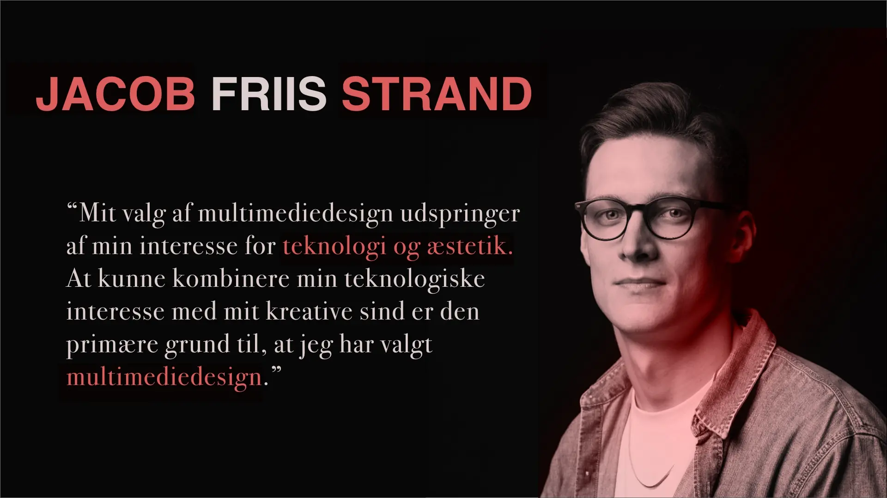

I Tema 1 lærte vi blandt andet at bruge Adobe XD til at lave et præsentationskort om os selv. Vi blev introduceret til text-tool, shapes, fill og gradients. Vi lærte også at importere billeder og at anvende fonte.
Jeg valgte at lave mit præsentationskort ved at farve udvalgte tekststykker med rød ved at lave en rød firkant ovenpå den tekst jeg ville have farvet, og herefter ‘maske’ sådan at teksten blev farvet rød. Ydermere brugte jeg masking med en gradient henover mit billede i samme farve og sammen med transparens og background blur, for at give en skyggelignende effekt.
Grunden til at jeg valgte at bruge disse værktøjer i mit præsentationskort var for at øve mig i de værktøjer, vi lærte i undervisningen.
